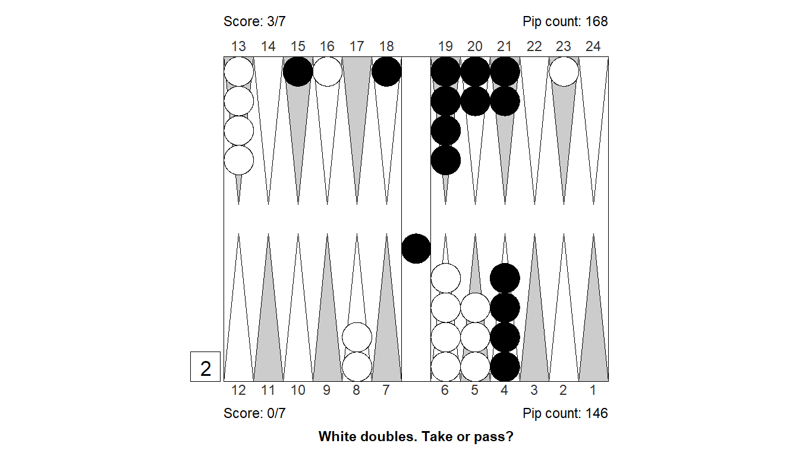
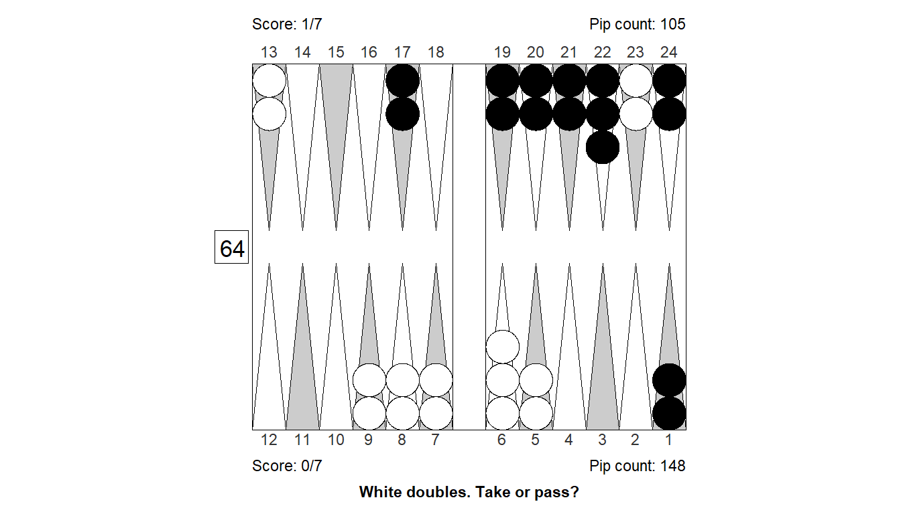

Mistake stats
Why this?
This is an exploratory analysis of a big chunk of my backgammon matches played on Backgammon Galaxy.
Shopping list
- Sum of errors by opponent, checker/cube (did I outplay opps or vice versa?)
- My sum and count of errors by checker/cube (Are checker plays more costly just because they are more frequent?)
- My sum and count of errors by proper cube action (What kind of cube decision errors are most costly for me?)
- Sum of checker/cube mistakes by size: Does the occasional quadruple blunder matter a lot? Is there a lot to gain by better focus, by getting rid of oversights and mis-clicks?
- My sum and count of errors by move no. (How much is given up in the opening?)
- Sum of error by doubling when too good, vs. gain when opp takes too good doubles. Does it pay to double when too good?
- Sum of error by doubling when not good enough, vs. gain when opp passes no doubles. Does it pay to double a little too early?
- Examples of the rare bird: Too good and not good enough.
- Are higher plies worth the extra compute time?
Are higher plies worth it?
Compare some overall results


Examples
Position 1: Checker play
Size of error, 3-ply: -0.259
Size of error, 4-ply: -0.16
Difference : -0.099
1. Cubeful 3-ply 6/4 5/4 Eq.: +0.568
*2. Cubeful 3-ply 18/17* 18/16 Eq.: +0.309 (-0.259)
3. Cubeful 2-ply 18/17*/15 Eq.: +0.326 (-0.241)
4. Cubeful 2-ply 18/17* 12/10 Eq.: +0.289 (-0.278)
5. Cubeful 0-ply 18/17* 13/11 Eq.: +0.330 (-0.237)
1. Cubeful 4-ply 6/4 5/4 Eq.: +0.439
*2. Cubeful 4-ply 18/17* 18/16 Eq.: +0.279 (-0.160)
3. Cubeful 2-ply 18/17*/15 Eq.: +0.326 (-0.113)
4. Cubeful 2-ply 18/17* 12/10 Eq.: +0.289 (-0.150)
5. Cubeful 0-ply 18/17* 13/11 Eq.: +0.330 (-0.109)Position 2: Checker play

Size of error, 3-ply: -0.191
Size of error, 4-ply: -0.103
Difference : -0.088
1. Cubeful 3-ply 10/4 7/6 Eq.: -0.027
2. Cubeful 3-ply 10/4 6/5 Eq.: -0.064 (-0.037)
3. Cubeful 3-ply 10/4 8/7 Eq.: -0.081 (-0.054)
4. Cubeful 3-ply 7/6 7/1* Eq.: -0.115 (-0.088)
*5. Cubeful 3-ply 10/9 7/1* Eq.: -0.218 (-0.191)
1. Cubeful 4-ply 10/4 7/6 Eq.: +0.089
2. Cubeful 4-ply 10/4 6/5 Eq.: +0.067 (-0.022)
3. Cubeful 4-ply 10/4 8/7 Eq.: +0.051 (-0.038)
4. Cubeful 4-ply 7/6 7/1* Eq.: +0.030 (-0.060)
*5. Cubeful 4-ply 10/9 7/1* Eq.: -0.014 (-0.103)Position 3: Checker play

Size of error, 3-ply: -0.147
Size of error, 4-ply: -0.07
Difference : -0.077
1. Cubeful 3-ply 6/2* 6/1* Eq.: +0.122
2. Cubeful 3-ply 14/10 6/1* Eq.: +0.080 (-0.042)
3. Cubeful 3-ply 10/5 6/2* Eq.: +0.075 (-0.048)
4. Cubeful 3-ply 14/10 7/2* Eq.: +0.038 (-0.085)
*5. Cubeful 3-ply 22/13* Eq.: -0.025 (-0.147)
1. Cubeful 4-ply 14/10 6/1* Eq.: +0.146
2. Cubeful 4-ply 6/2* 6/1* Eq.: +0.121 (-0.025)
3. Cubeful 4-ply 10/5 6/2* Eq.: +0.114 (-0.032)
4. Cubeful 4-ply 14/10 7/2* Eq.: +0.112 (-0.034)
*5. Cubeful 4-ply 22/13* Eq.: +0.075 (-0.070)Position 4: Checker play
Size of error, 3-ply: -0.258
Size of error, 4-ply: -0.185
Difference : -0.073
1. Cubeful 3-ply 24/18* 3/1 Eq.: -0.617
*2. Cubeful 3-ply 24/18*/16* Eq.: -0.875 (-0.258)
3. Cubeful 2-ply 13/5 Eq.: -0.837 (-0.220)
4. Cubeful 2-ply 24/18* 8/6 Eq.: -0.889 (-0.272)
5. Cubeful 2-ply 8/6 8/2 Eq.: -0.893 (-0.276)
1. Cubeful 4-ply 24/18* 3/1 Eq.: -0.628
*2. Cubeful 4-ply 24/18*/16* Eq.: -0.813 (-0.185)
3. Cubeful 2-ply 13/5 Eq.: -0.837 (-0.209)
4. Cubeful 2-ply 24/18* 8/6 Eq.: -0.889 (-0.262)
5. Cubeful 2-ply 8/6 8/2 Eq.: -0.893 (-0.265)Position 5: Checker play

Size of error, 3-ply: -0.181
Size of error, 4-ply: -0.109
Difference : -0.072
1. Cubeful 3-ply 10/8 10/4 Eq.: +0.726
*2. Cubeful 3-ply 8/2 6/4 Eq.: +0.545 (-0.181)
3. Cubeful 2-ply 13/11 8/2 Eq.: +0.448 (-0.278)
4. Cubeful 2-ply 8/2 3/1 Eq.: +0.425 (-0.301)
5. Cubeful 2-ply 13/5 Eq.: +0.393 (-0.333)
1. Cubeful 4-ply 10/8 10/4 Eq.: +0.621
*2. Cubeful 4-ply 8/2 6/4 Eq.: +0.512 (-0.109)
3. Cubeful 2-ply 13/11 8/2 Eq.: +0.448 (-0.173)
4. Cubeful 2-ply 8/2 3/1 Eq.: +0.425 (-0.197)
5. Cubeful 2-ply 13/5 Eq.: +0.393 (-0.228)Position 6: Checker play

Size of error, 3-ply: 0
Size of error, 4-ply: -0.129
Difference : 0.129
1. Cubeful 3-ply bar/22 7/1 Eq.: -1.000
2. Cubeful 3-ply bar/22 8/2 Eq.: -1.000 (-0.000)
*3. Cubeful 3-ply bar/22 21/15 Eq.: -1.000 (-0.000)
1. Cubeful 4-ply bar/22 8/2 Eq.: -0.871
2. Cubeful 4-ply bar/22 7/1 Eq.: -0.946 (-0.075)
*3. Cubeful 4-ply bar/22 21/15 Eq.: -1.000 (-0.129)Position 7: Checker play
Size of error, 3-ply: -0.016
Size of error, 4-ply: -0.116
Difference : 0.1
1. Cubeful 3-ply 12/4 Eq.: +0.678
*2. Cubeful 3-ply 12/7 4/1 Eq.: +0.662 (-0.016)
3. Cubeful 2-ply 7/4 6/1 Eq.: +0.510 (-0.168)
4. Cubeful 2-ply 12/9 6/1 Eq.: +0.453 (-0.225)
5. Cubeful 2-ply 6/1 4/1 Eq.: +0.361 (-0.318)
1. Cubeful 4-ply 12/4 Eq.: +0.600
*2. Cubeful 4-ply 12/7 4/1 Eq.: +0.484 (-0.116)
3. Cubeful 2-ply 7/4 6/1 Eq.: +0.510 (-0.090)
4. Cubeful 2-ply 12/9 6/1 Eq.: +0.453 (-0.147)
5. Cubeful 2-ply 6/1 4/1 Eq.: +0.361 (-0.240)Position 8: Checker play
Size of error, 3-ply: -0.315
Size of error, 4-ply: -0.405
Difference : 0.09
1. Cubeful 3-ply bar/22 23/22 Eq.: -0.524
*2. Cubeful 3-ply bar/22 13/12* Eq.: -0.839 (-0.315)
3. Cubeful 2-ply bar/22 6/5* Eq.: -0.793 (-0.269)
4. Cubeful 0-ply bar/22 24/23 Eq.: -0.924 (-0.401)
5. Cubeful 0-ply bar/24 8/5* Eq.: -0.935 (-0.411)
1. Cubeful 4-ply bar/22 23/22 Eq.: -0.410
*2. Cubeful 4-ply bar/22 13/12* Eq.: -0.814 (-0.405)
3. Cubeful 2-ply bar/22 6/5* Eq.: -0.793 (-0.384)
4. Cubeful 0-ply bar/22 24/23 Eq.: -0.924 (-0.515)
5. Cubeful 0-ply bar/24 8/5* Eq.: -0.935 (-0.526)Position 9: Checker play

Size of error, 3-ply: -0.139
Size of error, 4-ply: -0.226
Difference : 0.087
1. Cubeful 3-ply 18/12 10/4 Eq.: +0.308
2. Cubeful 3-ply 18/15(2) 10/4 Eq.: +0.297 (-0.011)
3. Cubeful 3-ply 18/15 13/4 Eq.: +0.275 (-0.033)
*4. Cubeful 3-ply 13/4 10/7 Eq.: +0.169 (-0.139)
5. Cubeful 2-ply 13/4 6/3 Eq.: +0.252 (-0.056)
1. Cubeful 4-ply 18/15(2) 10/4 Eq.: +0.408
2. Cubeful 4-ply 18/15 13/4 Eq.: +0.364 (-0.044)
3. Cubeful 4-ply 18/12 10/4 Eq.: +0.350 (-0.058)
*4. Cubeful 4-ply 13/4 10/7 Eq.: +0.182 (-0.226)
5. Cubeful 2-ply 13/4 6/3 Eq.: +0.252 (-0.156)Position 10: Checker play

Size of error, 3-ply: -0.116
Size of error, 4-ply: -0.201
Difference : 0.085
1. Cubeful 3-ply 24/23 6/2 Eq.: +0.334
2. Cubeful 3-ply 24/23 8/4 Eq.: +0.267 (-0.067)
*3. Cubeful 3-ply 6/1 Eq.: +0.217 (-0.116)
4. Cubeful 2-ply 8/4 6/5 Eq.: +0.218 (-0.116)
5. Cubeful 2-ply 8/4 7/6 Eq.: +0.185 (-0.148)
1. Cubeful 4-ply 24/23 6/2 Eq.: +0.377
2. Cubeful 4-ply 24/23 8/4 Eq.: +0.343 (-0.035)
*3. Cubeful 4-ply 6/1 Eq.: +0.176 (-0.201)
4. Cubeful 2-ply 8/4 6/5 Eq.: +0.218 (-0.159)
5. Cubeful 2-ply 8/4 7/6 Eq.: +0.185 (-0.192)Position 11: Cube decision

Size of error, 3-ply: -0.619
Size of error, 4-ply: -0.514
Difference : -0.105
Cube analysis
3-ply cubeless equity -0.972 (Money: -0.769)
0.291 0.089 0.003 - 0.709 0.420 0.024
Cubeful equities:
1. No double -1.075
2. Double, take -1.619 (-0.544)
3. Double, pass -1.000 (+0.075)
Proper cube action: Too good to double, pass (12.1%)
Cube analysis
4-ply cubeless equity -0.935 (Money: -0.733)
0.306 0.093 0.004 - 0.694 0.415 0.027
Cubeful equities:
1. No double -1.027
2. Double, take -1.514 (-0.487)
3. Double, pass -1.000 (+0.027)
Proper cube action: Too good to double, pass (5.2%)Position 12: Cube decision

Size of error, 3-ply: -0.93
Size of error, 4-ply: -0.851
Difference : -0.079
Cube analysis
3-ply cubeless equity -0.737 (Money: -0.695)
0.286 0.068 0.002 - 0.714 0.322 0.016
Cubeful equities:
1. No double -1.086
2. Double, take -1.930 (-0.845)
3. Double, pass -1.000 (+0.086)
Proper cube action: Too good to redouble, pass (9.2%)
Cube analysis
4-ply cubeless equity -0.700 (Money: -0.659)
0.300 0.068 0.003 - 0.700 0.316 0.014
Cubeful equities:
1. No double -1.082
2. Double, take -1.851 (-0.769)
3. Double, pass -1.000 (+0.082)
Proper cube action: Too good to redouble, pass (9.6%)Position 13: Cube decision

Size of error, 3-ply: -0.134
Size of error, 4-ply: -0.063
Difference : -0.071
Cube analysis
3-ply cubeless equity -0.682 (Money: -0.553)
0.378 0.113 0.006 - 0.622 0.411 0.019
Cubeful equities:
1. Double, pass -1.000
2. Double, take -1.134 (-0.134)
3. No double -0.694 (+0.306)
Proper cube action: Double, pass
Cube analysis
4-ply cubeless equity -0.653 (Money: -0.528)
0.385 0.116 0.008 - 0.615 0.401 0.020
Cubeful equities:
1. Double, pass -1.000
2. Double, take -1.063 (-0.063)
3. No double -0.659 (+0.341)
Proper cube action: Double, passPosition 14: Cube decision

Size of error, 3-ply: -0.403
Size of error, 4-ply: -0.332
Difference : -0.071
Cube analysis
3-ply cubeless equity -0.726 (Money: -0.723)
0.220 0.070 0.002 - 0.780 0.225 0.009
Cubeful equities:
1. Double, pass -1.000
2. Double, take -1.403 (-0.403)
3. No double -0.943 (+0.057)
Proper cube action: Double, pass
Cube analysis
4-ply cubeless equity -0.696 (Money: -0.694)
0.231 0.068 0.002 - 0.769 0.216 0.010
Cubeful equities:
1. Double, pass -1.000
2. Double, take -1.332 (-0.332)
3. No double -0.932 (+0.068)
Proper cube action: Double, passPosition 15: Cube decision

Size of error, 3-ply: -0.376
Size of error, 4-ply: -0.308
Difference : -0.068
Cube analysis
3-ply cubeless equity -0.635 (Money: -0.630)
0.191 0.005 0.000 - 0.809 0.016 0.000
Cubeful equities:
1. Double, pass -1.000
2. Double, take -1.376 (-0.376)
3. No double -0.970 (+0.030)
Proper cube action: Double, pass
Cube analysis
4-ply cubeless equity -0.612 (Money: -0.607)
0.201 0.004 0.000 - 0.799 0.013 0.000
Cubeful equities:
1. Double, pass -1.000
2. Double, take -1.308 (-0.308)
3. No double -0.967 (+0.033)
Proper cube action: Double, passPosition 16: Cube decision

Size of error, 3-ply: -0.2
Size of error, 4-ply: -0.271
Difference : 0.071
Cube analysis
3-ply cubeless equity +0.465 (Money: +0.389)
0.672 0.105 0.002 - 0.328 0.061 0.001
Cubeful equities:
1. No double +0.572
2. Double, pass +1.000 (+0.428)
3. Double, take +0.372 (-0.200)
Proper cube action: No double, take (31.8%)
Cube analysis
4-ply cubeless equity +0.475 (Money: +0.394)
0.669 0.118 0.005 - 0.331 0.065 0.003
Cubeful equities:
1. No double +0.619
2. Double, pass +1.000 (+0.381)
3. Double, take +0.348 (-0.271)
Proper cube action: No double, take (41.5%)Position 17: Cube decision

Size of error, 3-ply: -0.215
Size of error, 4-ply: -0.285
Difference : 0.07
Cube analysis
3-ply cubeless equity -0.411 (Money: -0.338)
0.462 0.129 0.005 - 0.538 0.336 0.061
Cubeful equities:
1. Double, pass -1.000
2. Double, take -1.215 (-0.215)
3. No double -0.817 (+0.183)
Proper cube action: Redouble, pass
Cube analysis
4-ply cubeless equity -0.441 (Money: -0.367)
0.451 0.127 0.007 - 0.549 0.342 0.059
Cubeful equities:
1. Double, pass -1.000
2. Double, take -1.285 (-0.285)
3. No double -0.848 (+0.152)
Proper cube action: Redouble, passPosition 18: Cube decision

Size of error, 3-ply: -0.073
Size of error, 4-ply: -0.137
Difference : 0.064
Cube analysis
3-ply cubeless equity +0.346 (Money: +0.325)
0.642 0.098 0.002 - 0.358 0.058 0.001
Cubeful equities:
1. No double +0.542
2. Double, pass +1.000 (+0.458)
3. Double, take +0.469 (-0.073)
Proper cube action: No double, take (13.8%)
Cube analysis
4-ply cubeless equity +0.305 (Money: +0.288)
0.627 0.097 0.002 - 0.373 0.065 0.001
Cubeful equities:
1. No double +0.506
2. Double, pass +1.000 (+0.494)
3. Double, take +0.370 (-0.137)
Proper cube action: No double, take (21.7%)Position 19: Cube decision

Size of error, 3-ply: -0.174
Size of error, 4-ply: -0.238
Difference : 0.064
Cube analysis
3-ply cubeless equity -0.493 (Money: -0.514)
0.313 0.053 0.001 - 0.687 0.190 0.005
Cubeful equities:
1. Double, take -0.826
2. Double, pass -1.000 (-0.174)
3. No double -0.780 (+0.046)
Proper cube action: Double, take
Cube analysis
4-ply cubeless equity -0.469 (Money: -0.490)
0.321 0.055 0.002 - 0.679 0.183 0.005
Cubeful equities:
1. Double, take -0.762
2. Double, pass -1.000 (-0.238)
3. No double -0.750 (+0.012)
Proper cube action: Double, takePosition 20: Cube decision

Size of error, 3-ply: -0.161
Size of error, 4-ply: -0.22
Difference : 0.059
Cube analysis
3-ply cubeless equity +0.048 (Money: +0.087)
0.551 0.111 0.003 - 0.449 0.126 0.004
Cubeful equities:
1. No double +0.215
2. Double, pass +1.000 (+0.785)
3. Double, take +0.054 (-0.161)
Proper cube action: No double, take (17.0%)
Cube analysis
4-ply cubeless equity -0.001 (Money: +0.037)
0.533 0.100 0.002 - 0.467 0.127 0.004
Cubeful equities:
1. No double +0.158
2. Double, pass +1.000 (+0.842)
3. Double, take -0.062 (-0.220)
Proper cube action: No double, take (20.7%)